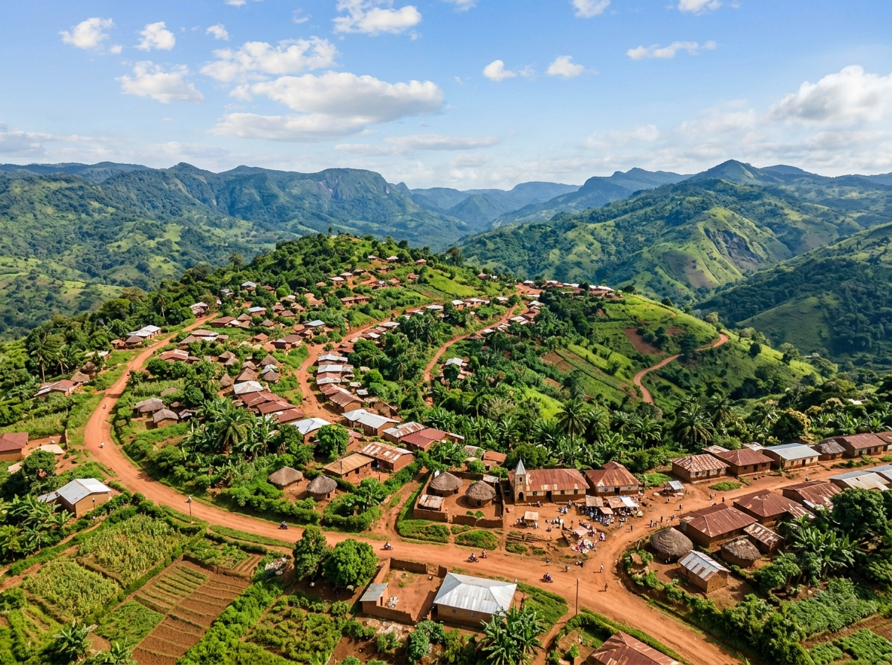
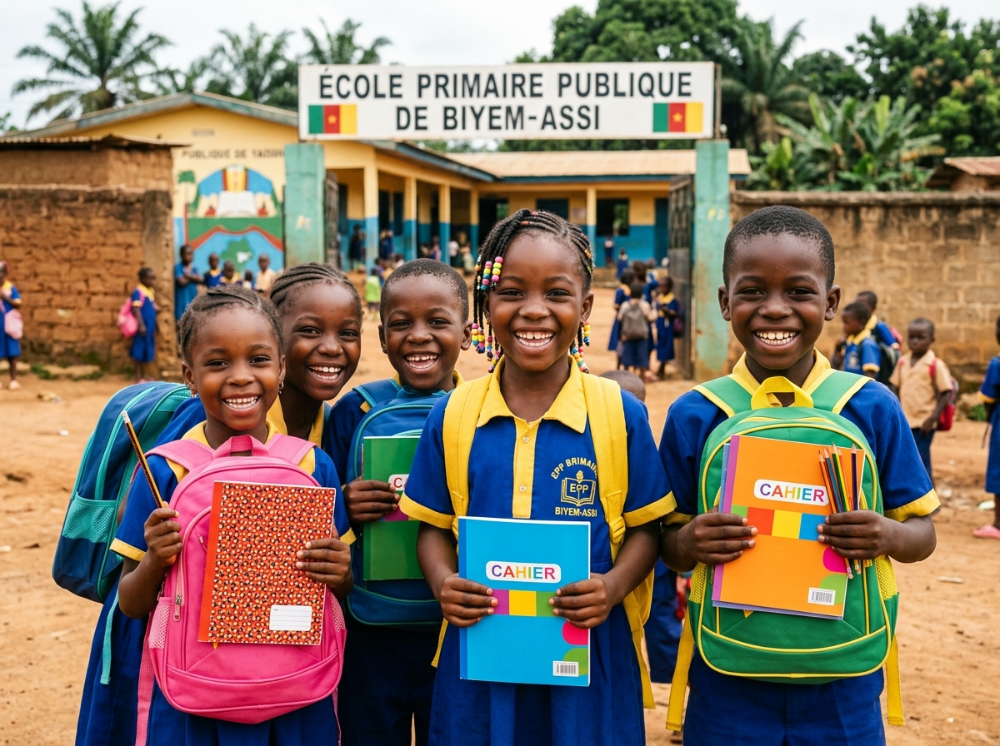
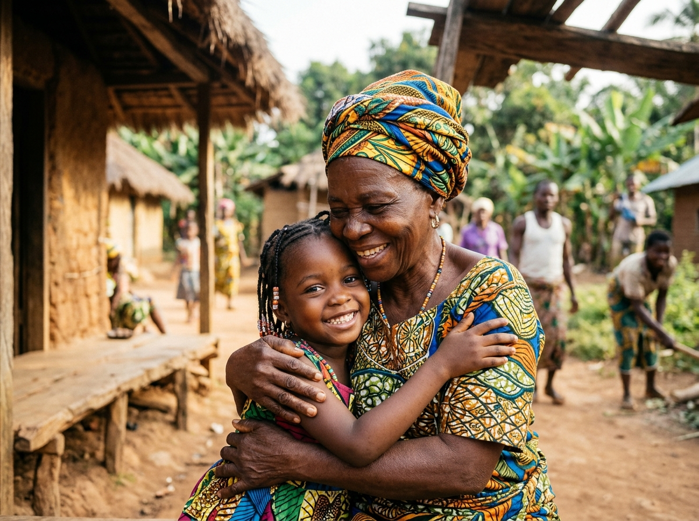
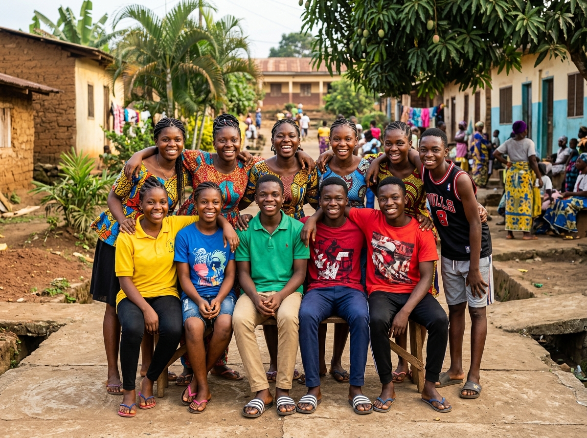
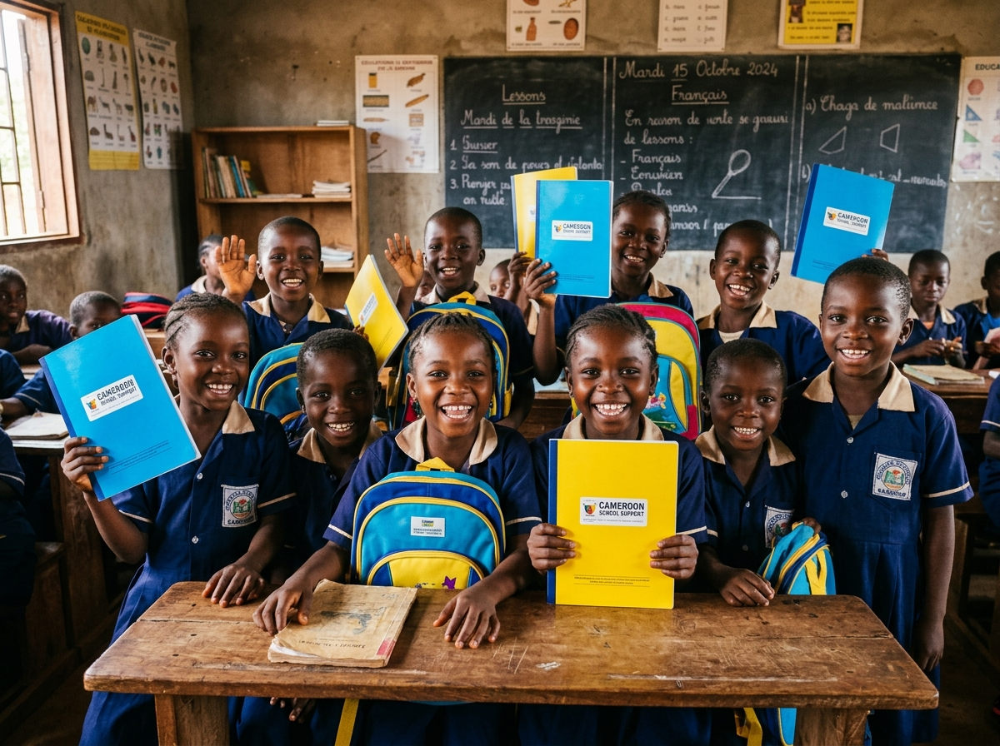

Éducation & Scolarité
Réussite scolaire des enfantsDistribution de fournitures scolaires, cahiers, chaussures et accompagnement des écoliers de Njiyap.
Santé & Eau Potable
Soins et accès aux infrastructuresOrganisation de campagnes médicales, médicaments et soutien à l'accès à l'eau potable pour les familles.
Solidarité & Développement
Entraide & actions durablesAccompagnement des familles vulnérables, transmission intergénérationnelle et initiatives communautaires pérennes.

À propos de la Fondation Nfon Mayap
La Fondation Nfon Mayap est une initiative à vocation sociale et humanitaire implantée à Njiyap, dans le département du Noun, au Cameroun.
Elle a pour ambition de contribuer au développement humain et communautaire à travers des actions concrètes dans les domaines de l’éducation, de la santé, de la solidarité, de l’accès à l’eau et de l’accompagnement des populations.
La Fondation souhaite également encourager la solidarité entre les générations et mobiliser les Camerounais de l’intérieur comme de la diaspora autour de projets utiles aux communautés.
« Construire une communauté plus solidaire, donner aux enfants les moyens de réussir et contribuer durablement au développement de Njiyap et de ses environs. »
Elle a pour ambition de contribuer au développement humain et communautaire à travers des actions concrètes dans les domaines de l’éducation, de la santé, de la solidarité, de l’accès à l’eau et de l’accompagnement des populations.
Nos Actions
Des initiatives concrètes et mesurables pour répondre aux besoins fondamentaux des populations de Njiyap et du département du Noun.

Distribution de fournitures scolaires, cahiers, chaussures et autres équipements aux enfants.
Organisation de campagnes de consultations médicales et mise à disposition de médicaments pour les populations qui en ont besoin.
Soutien aux initiatives permettant d’améliorer l’accès à l’eau potable dans les communautés.

Actions en faveur des familles et des personnes vulnérables.

Accompagnement des enfants et des jeunes, considérés comme les acteurs du Cameroun de demain.
Nos Projets
Découvrez nos programmes en cours et leurs retombées directes pour les bénéficiaires.

Projet de soutien scolaire
Première édition de distribution de kits scolaires et de chaussures aux enfants de Njiyap et des localités environnantes.
« Construire une communauté plus solidaire, donner aux enfants les moyens de réussir et contribuer durablement au développement de Njiyap et de ses environs. »
Nos 5 Valeurs
Solidarité
Être aux côtés de ceux qui en ont besoin.
Humanité
Placer la dignité humaine au cœur de nos actions.
Éducation
Investir dans les générations futures.
Développement
Favoriser des solutions concrètes et durables.
Transmission
Préserver les valeurs et construire l’avenir.